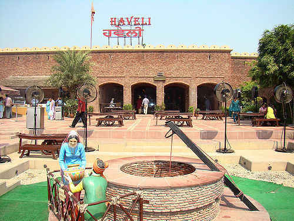

Jalandhar is an important city in Doaba region of Punjab. As such, it has clear reflection of typical Doaba culture in its lifestyle and food habits. People here are absolute foodies and they love to gorge on the delicious spicy cuisines. The authentic taste of this region constitutes an essential part of food in Jalandhar. From spicy street food to gourmet delights, the city has lots to offer to the avid foodies. The eateries in Jalandhar serve the delicious food in a perfect setting with delightful ambiance and warmth for which this region is known.
Vegan and non vegan food is equally included in the staple diet of people in Jalandhar while they also have a sweet tooth for mouthwatering desserts like kheer, gajar ka halwa, and jalebi. For daily diet, people here stick to the traditional meals while festivals are marked by rich cuisines. Since the city has multi ethnic cultural impact due to its huge NRI base, international cuisines are also quite popular here. Multi cuisines like Continental, Italian, Chinese, and French are the integral part of eateries in Jalandhar.
If you wish to explore the typical Punjabi culture with authentic cuisines, roadside and highway dhabas in Jalandhar are the best place to eat at. These dhabas serve the delicious food cooked in traditional style and served in the same way. There are many famous and classy dhabas in Jalandhar that attract lots of NRIs and foreigner tourists to them. Some of these dhabas have interiors done in very traditional manner to give the feel of a hospitality that Punjabis offer to their guests.
Wheat is the staple food of people in Jalandhar. Breads made from wheat constitute daily meals in wide varieties like tandoori roti, stuffed paranthas, tava chapatti, etc. Rich use of ghee is common in the households. Spices are also generously used in common meals by the local people. In Doaba region including Jalandhar, ghee laden stuffed paranthas with milk based beverages are quite common. On festive occasions, rice is also popularly cooked here but with some flavor or tadka.

FAMOUS RESTAURANTS
